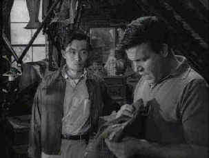

| Treasures
of the Twilight Zone/B,B- |
| Panasonic/1959-64/FS
1.33 |
The initial presentation of Treasures
of The Twilight Zone includes three episodes from the series, a Mike Wallace interview of Rod
Serling and a "pitch" tape made by hosted by Serling selling the series to potential
sponsors.
The first episode is Where is Everybody? , the premier episode of
the series which began in October 1959. A man suffering from amnesia wanders through an apparently
deserted town. There are signs that the daily life of the town has stopped suddenly and
mysteriously. His hunt for help takes him through different buildings including a movie theater and
a police station as he becomes progressively more agitated by his isolation. Earl Holliman makes
the most of his moments of isolation.
 |
|
George Takei and Neville Brand in The Encounter
©CBS Video
|
The Encounter is the second episode
of the collection. Not available for syndication since its controversial debut in 1964, the
claustrophobic and xenophobic story takes place in the attic of a former World War II marine. The
marine, played by a puffed up and tired looking Neville Brand invites a Japanese gardener (George
Takei) up to the attic to help him clean out the accumulation. Amongst the dusty artifacts of the
past is a Samurai sword taken from a Japanese officer. The sword serves as a precarious rope bridge
between the former marine and the young Japanese man. With short, breathless precision, a
relationship between the two men in the attic is defined. Somewhere between the moments of vitriol
and civility the two men face themselves in this well made explosive little drama.
The third episode, An Occurrence at Owl Creek Bridge, was not even
made for The Twilight Zone, yet was the last piece shown on the series. Made in France, the short
film was the winner of the 1963 Academy Award as Best Short Film. From an Ambrose Bierce short
story, this tale about the hanging of a Southern Man during the United States Civil War truly does
play like it was written for the series. Poetic and starkly real at the same time, the action plays
out like a nightmare. The pomp and ceremony surrounding the moments leading up to and the actual
hanging are laid out in careful military fashion. As the condemned man teeters on the edge of the
bridge, rope around his neck, the tale takes off in its own direction. This is an outstanding work
of short film.
The overall image quality of the DVD is quite good. The black and white
material has some markings, but the contrast is strong and shadow detail fine. The Dolby Digital
mono sound is serviceable. The Serling interview is fascinating, though the video source is
atrocious to say the best. One might consider simply listening to it with no video. Serling
confronts the issues of censorship with varying degrees of frankness. Mike Wallace never pulls his
punches and Serling doesn’t flinch. The "pitch" tape made by Serling and company to
sell the series is a fascinating television artifact and a lot of fun to watch. Standard issue
written essays about the show fills out the specials on the DVD.
|
|

Selections from the feature archive include articles on Akira Kurosawa,
Frank Darabont, Blonde Bimbos, Hollywood
Street Gangs, or Vietnam:
The Hollywood Pariah, and many more...
Robert
A. Harris

Tilting at Hollywood
He's part of the dynamic duo that restored Lawrence
of Arabia, Spartacus, My Fair Lady and Vertigo. Harris rides a white horse into the for the cause
of preserving our film legacy. Click on the image to read more.


DVDPlanet is the DVD
incarnation of legendary laser retailer Ken Crane's. Deep discounts and serious service.

The National Film Preservation Foundation (NFPF) is the nonprofit organization created by the U.S. Congress to save
America's film heritage.

Information on film sound in theaters and home theaters. Lots of helpful information provided in a
handsome interface.

A vast reservoir of DVD information, reviews, the kitchen sink. Check
out their huge DVD database including reviews from many sites.

The
Movie Poster Archive includes extensive poster images from the films of stars like Susan Hayward,
Kirk Douglas, Katharine Hepburn and many more. Our featured star is James Stewart
|